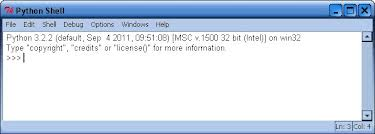
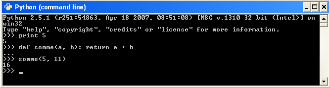

Le langage HTML
Cours d'ISN du Lycée du Parc
Bienvenue sur mon site !
Ce site est consacre au cours d'ISN du Lycee du Parc 2014-2015. Depuis le debut de l'annee 2014, 6 eleves decouvrent la specialite ISN au Lycée du Parc.
Or, je fais partie de l'un d'eux. Je vais ainsi vous presenter ce que l'on a fait depuis le debut de l'année par l'intermediaire de mes sites internet.
Mais qu'est-ce que l'ISN ?
ISN est une abréviation de "Informatique et Sciences du Numerique". Creee en 2012, c'est une specialite que les eleves de terminale scientifique peuvent
choisir, qui prend place parmi les specialites mathematiques, physique-chimie et sciences de la vie et de la terre. Cette specialite n'a evidemment pas
pour but de former des ingenieurs en informatique en 1 an avec seulement deux heures de cours par semaine, elle a pour fonction de faire decouvrir
aux eleves le monde de l'informatique, ainsi que quelques bases dans des logiciels comme HTML, CSS et PYTHON.
Nous avons fabrique une clef ISN,
c'est-a-dire que nous lui avons implante le systeme d'exploitation "linux". Des logiciels comme Geany ou Pyzo sont installes sous forme
d'extension. Nous l'utilisons regulierement, afin de faire des exercices mais aussi car les cours sont enregistres dessus (une version papier du cours
est malgre tout distribuee, pour faire face aux imprevus..).
Mais qu'est-ce que l'informatique ?
L'informatique est un domaine tres vaste. A l'heure actuelle, il est partout, malgre le fait qu'il soit virtuel. Que ce soit dans nos ordinateurs, dans
nos telephones, ou encore dans nos tablettes, l'informatique est une veritable science qui ne cesse d'evoluer. Si l'on devait lui attribuer une
definition, ce serait "L'ensemble des techniques permettant de trier, de mettre en memoire et de tramsmettre d'une maniere automatique toutes sortes
d'informations au moyen d'un ordinateur." (definition de Larousse).
Et je vais vous presenter ce que l'on a fait depuis le debut de l'annee.
Nous avons aborde diverses notions, qui sont presentees ci-dessous:
- Les cours de HTML
- Les cours de CSS
- Les cours de Python
Les cours de HTML
Cliquer ici pour voir les bases du langage HTML
Le HTML est un langage servant a representer des pages web. C'est un langage de balisage, c'est-a-dire qu'il est compose de balises qui structurent
son code. Les balises suivent un certain ordre, par exemple, les grandes balises comme < html > sont bien superieures aux balises < p > :

Parmi les sites qui permettent d'apprendre ce langage, il y a :
Les cours de CSS
Cliquer ici pour voir les bases du langage CSS
Le CSS est un langage de presentation de page web. Il doit imperativement etre utilise avec le langage HTML ou XHTML. L'exemple suivant montre
a quel point le langage CSS peut etre utile du point de vue esthetique:

Divers sites permettent d'apprendre aux novices a maitriser ce langage, parmi eux il y a :
Les cours de Python
Cliquer ici pour voir les bases du langage Python
Python est un langage de programmation permettant de mettre en oeuvre des algorithmes. Il est compose d'une console et d'un interpreteur de commande.
L'interpreteur de commande est l'endroit ou l'informaticien creee son code, et la console est l'endroit ou s'affiche le resultat du code. Remarque,
il est possible et faire un programme a l'interieur de la console, mais c'est tres peu pratique, du fait qu'il faut retaper tout son programme a
chaque test. Afin de verifier son programme en Python, on peut aller sur le site: PythonTutor.com (en anglais)


Pour approfondir les bases du langage Python, vous pouvez aller sur :
Retourner en haut de la page
Des idees? Des suggestions? Des reclamations? Envoyez vos idees ici !